A hands-on Python tutorial for building a competitive price monitor, from first API call to automated quality grading
You built an AI agent. It works in a notebook. Your demo went well.
Now ship it.
That means sandboxed execution so it can't trash your production database. Credential isolation so a prompt injection can't steal your API keys. State management so a disconnection doesn't lose an hour of work. Error recovery. Tracing. Scaling.
Three months of infrastructure work, minimum. And that's before your first user sees anything.
Claude Managed Agents, which launched in public beta on April 9, 2026, eliminates that entire layer. You define the agent. Anthropic runs it. This tutorial walks you through the complete pipeline: build a competitive price monitor that researches real products across the web, stream its work in real time, and then test its output with a built-in grading system that almost nobody is talking about yet.
🦸🏻♀️ If this helps you ship better AI systems:
👏 Clap 50 times (yes, you can!) — Medium's algorithm favors this, increasing visibility to others who then discover the article.
🔔 Follow me on Medium, LinkedIn and subscribe to get my latest article.
You run an online electronics store. You sell 10 products: AirPods, Sony headphones, a Dyson vacuum, Samsung and Pixel phones, a MacBook, an LG TV, Bose headphones, a Nintendo Switch, and a Kindle. Your prices are set quarterly. The problem: you have no idea whether you're competitive right now. Amazon, Best Buy, and Walmart adjust prices daily. By the time you check manually, the data is stale.
The agent we're building solves this. You give it a CSV of your product catalog (name, SKU, your price, category). It takes that catalog, searches the web for current prices at each of the three competitors, compares them against your prices, flags every product where you're more than 15% above the lowest competitor, and writes a structured markdown report with a summary table, per-product breakdowns, and pricing recommendations.
Here's what makes this a good test of Managed Agents specifically. It exercises the full toolset: web search (30 searches across 3 retailers for 10 products), file operations (reading the catalog, writing the report), and bash (data processing). It runs long enough to demonstrate session persistence (6 to 8 minutes of active work). And the output is structured enough to test with a rubric: did it cover all 10 products? Did it flag the right ones? Did it include revenue impact estimates?
The input looks like this:
product_name,sku,your_price,category
Apple AirPods Pro 2,APD-001,289.99,Audio
Sony WH-1000XM5,SNY-002,378.00,Audio
Dyson V15 Detect,DYS-003,749.99,Home
Samsung Galaxy S25 Ultra,SAM-004,1349.00,Mobile
...The output is a markdown report at /mnt/session/outputs/price_report.md containing a comparison table, flagged items, and actionable recommendations. The Outcomes grader then scores that report against a rubric you define.
Six steps to get there. Let's start with the architecture.
Most coverage of Managed Agents describes it as "hosted agents." That's accurate but shallow. The architectural insight underneath is more interesting.
Anthropic's engineering team decomposed an agent into three independent components: the brain (Claude plus its orchestration harness), the hands (sandboxed containers where code runs and files get written), and the session (a durable, append-only log of everything that happened). Each component can fail, restart, or be replaced without disturbing the others.
This is the same pattern operating systems used decades ago. The read() system call doesn't care whether it's reading from a 1970s disk pack or a modern SSD. The abstraction outlasts the hardware. Managed Agents applies that same principle: the interfaces stay stable while the implementations (harnesses, sandboxes, models) evolve underneath.
The diagram above (from Anthropic's engineering blog) shows how these three components are virtualized behind stable interfaces. The session stores every event durably. The harness runs the agent loop and routes tool calls. The sandbox executes code in isolation. Each can be swapped, restarted, or scaled independently.
The critical architectural decision: the brain calls the hands the same way it calls any other tool: execute(name, input) → string. If a container dies, the harness catches it as a tool-call error and provisions a new one. Credentials never reach the sandbox. Auth tokens live in a secure vault and get injected at the proxy level, never exposed to agent-generated code.

The official product architecture diagram from Anthropic's launch blog captures this in one view:

For you as a developer, this architecture collapses into four API primitives:
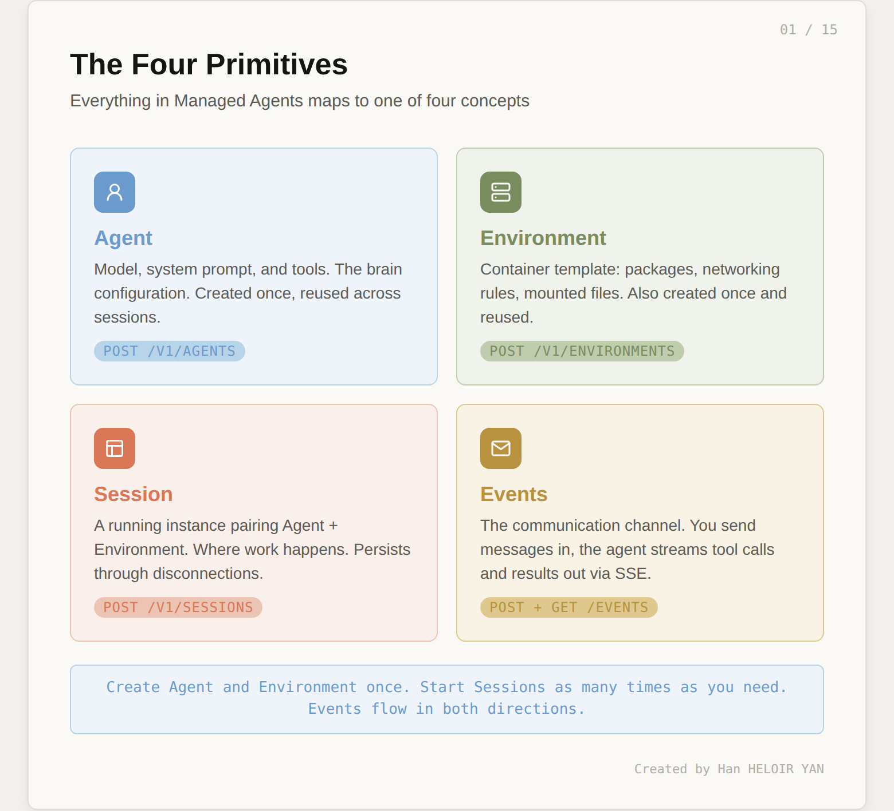
Agent is the configuration: which model, what system prompt, which tools are available. Create it once, reference it by ID forever.
Environment is the container template: pre-installed packages, network access rules, mounted files. Also created once and reused.
Session is a running instance that pairs an Agent with an Environment. It's where work happens. Sessions persist through disconnections and can run for hours.
Events are the communication channel. You send user messages in. The agent streams tool calls, text, and status updates out. The event log is durable and lives outside both the brain and the hands.
Before we touch any code, here's the full picture of what we're building. The diagram below maps every concept we just covered to the concrete price monitor use case. You don't need to understand every element yet. Each box corresponds to one of the six steps we'll walk through next. Come back to this diagram after Step 6, and it will read like a summary of everything you built.
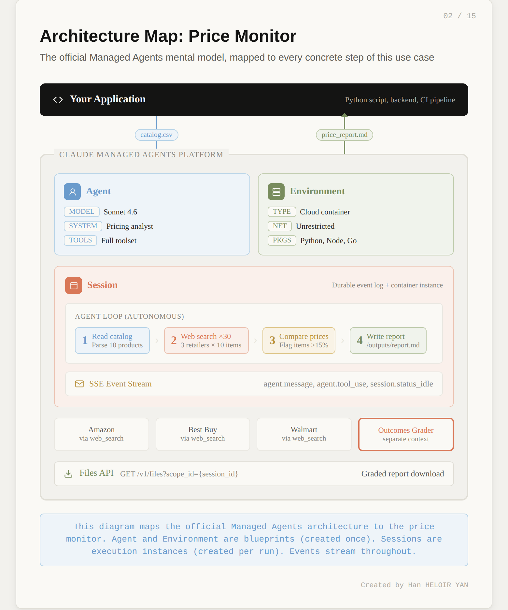
One positioning note before we dive in. Anthropic now offers three ways to build with Claude. The Messages API gives you raw model access and you build the agent loop yourself. The Agent SDK gives you Claude Code as a library with built-in tools. Managed Agents gives you the full stack: Anthropic runs the loop, the sandbox, the state, and the error recovery. This tutorial focuses entirely on Managed Agents.
You need three things:
pip install anthropicSet your API key:
export ANTHROPIC_API_KEY="your-api-key-here"Every Managed Agents request requires the managed-agents-2026-04-01 beta header. The Python SDK sets this automatically when you use the beta namespace, so you won't need to manage it manually.
Quick verification that your setup works:
import anthropic
client = anthropic.Anthropic()
# If this runs without error, you're ready
print("SDK version:", anthropic.__version__)An Agent is a reusable configuration object. It defines three things: which model thinks, what instructions it follows, and which tools it can use. No compute runs when you create an Agent. It's a blueprint.
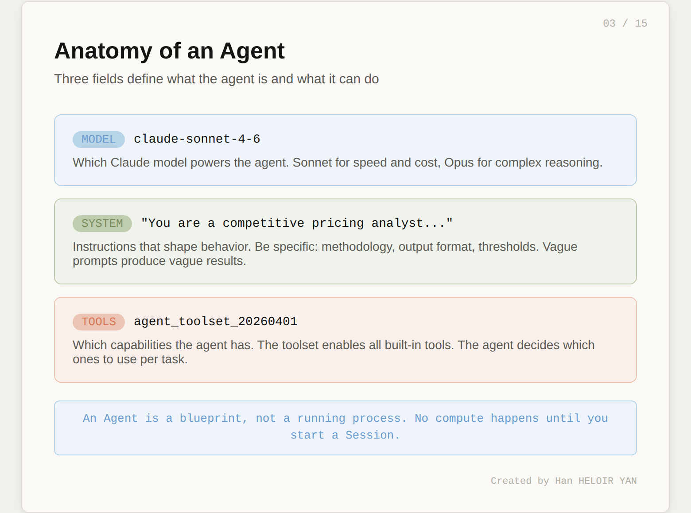
Here's the Agent for our competitive price monitor:
agent = client.beta.managed_agents.agents.create(
name="Price Monitor",
model="claude-sonnet-4-6",
system="""You are a competitive pricing analyst. Given a product
catalog CSV, research current prices for each product across
Amazon, Best Buy, and Walmart using web search.
For each product:
1. Search for the exact product name + retailer
2. Record the lowest price found at each retailer
3. Compare against the catalog price
4. Flag any product where the catalog price exceeds
the lowest competitor price by more than 15%
Output a markdown report to /mnt/session/outputs/price_report.md
with a summary table and detailed findings per product.""",
tools=[{"type": "agent_toolset_20260401"}]
)
print(f"Agent ID: {agent.id}")The agent_toolset_20260401 tool type is the key line. It enables the full suite of built-in tools: bash commands, file read/write/edit, web search, web fetch, and more. You don't need to define each tool individually. The agent decides which ones to use based on the task.
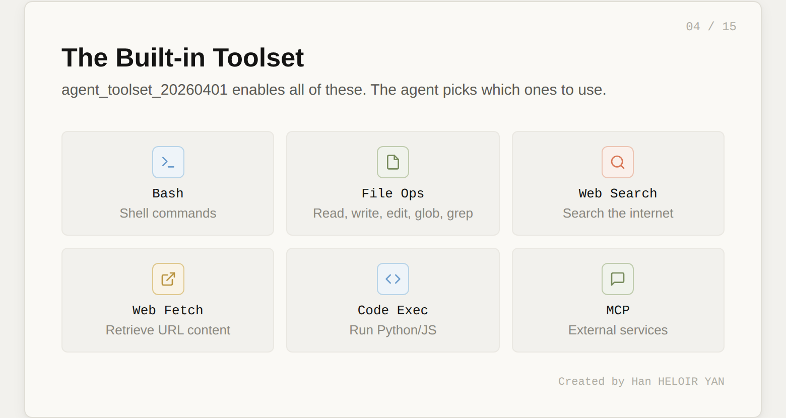
Two things worth noting about the system prompt. First, the output path /mnt/session/outputs/ is where the agent writes deliverables you can retrieve later via the Files API. Second, the instructions are specific about methodology (search per retailer, flag at 15% threshold). Vague system prompts produce vague results. The more concrete your instructions, the more testable your agent becomes. This matters when we get to the Outcomes section.
Save agent.id. You'll reference it every time you start a session.
The Environment defines the container where the agent's code actually runs. It's separate from the Agent because the same brain might need different containers for different tasks. A data analysis agent might need one environment with pandas pre-installed and another with R.
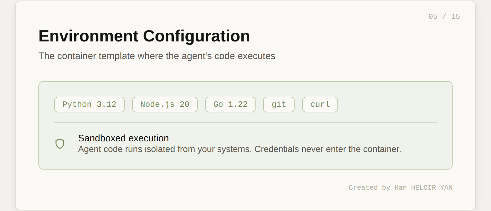
For our price monitor, the setup is minimal:
environment = client.beta.managed_agents.environments.create(
name="price-monitor-env",
config={
"type": "cloud",
"networking": {"type": "unrestricted"}
}
)
print(f"Environment ID: {environment.id}")We set networking to unrestricted because the agent needs to perform web searches for competitor prices. In a more locked-down scenario, you could restrict network access to specific domains:
# Alternative: restrict to specific retailers
"networking": {
"type": "restricted",
"allowed_domains": [
"amazon.com", "bestbuy.com", "walmart.com"
]
}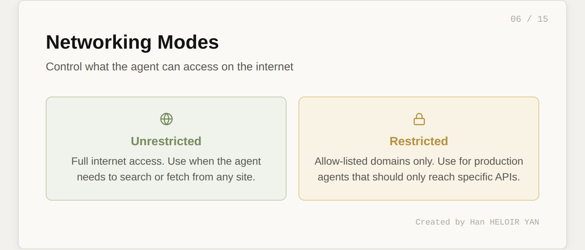
The cloud container comes with Python, Node.js, and Go pre-installed. If you need additional packages, you can specify them in the environment config or let the agent install them via bash during the session.
Like the Agent, the Environment is reusable. Create it once, reference it by ID across many sessions.
This is where compute begins. A Session pairs your Agent with your Environment and starts the clock.
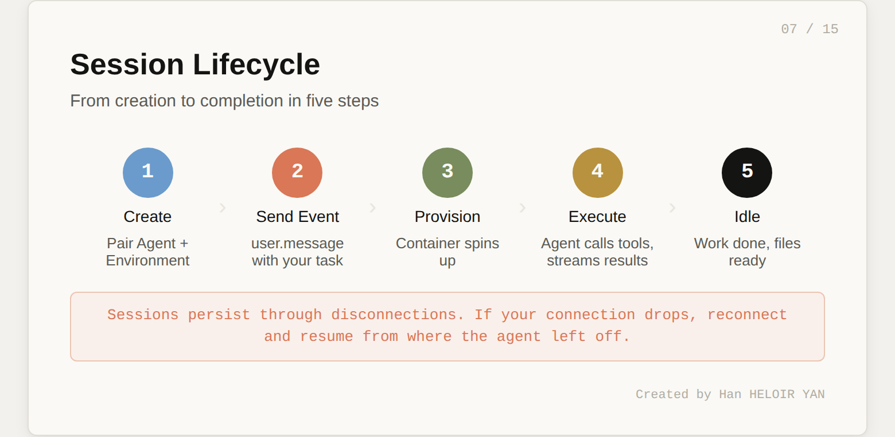
First, create the session:
session = client.beta.managed_agents.sessions.create(
agent=agent.id,
environment_id=environment.id,
title="Price comparison run"
)
print(f"Session ID: {session.id}")Now send the product catalog as a user message. Here's a realistic catalog of 10 consumer electronics products with slightly inflated "your store" prices:
catalog = """product_name,sku,your_price,category
Apple AirPods Pro 2,APD-001,289.99,Audio
Sony WH-1000XM5,SNY-002,378.00,Audio
Dyson V15 Detect,DYS-003,749.99,Home
Samsung Galaxy S25 Ultra,SAM-004,1349.00,Mobile
Apple MacBook Air M4,APL-005,1249.00,Laptop
LG C4 65-inch OLED TV,LGC-006,1899.00,TV
Bose QuietComfort Ultra,BSE-007,429.99,Audio
Nintendo Switch 2,NIN-008,449.99,Gaming
Kindle Scribe 2,KDL-009,399.99,E-reader
Google Pixel 9 Pro,GPX-010,1099.00,Mobile"""
client.beta.managed_agents.sessions.events.create(
session_id=session.id,
events=[{
"type": "user.message",
"content": [{
"type": "text",
"text": f"""Here is my product catalog:\n\n{catalog}\n\n
Research competitor prices for each product across
Amazon, Best Buy, and Walmart. Write the full analysis
report to /mnt/session/outputs/price_report.md"""
}]
}]
)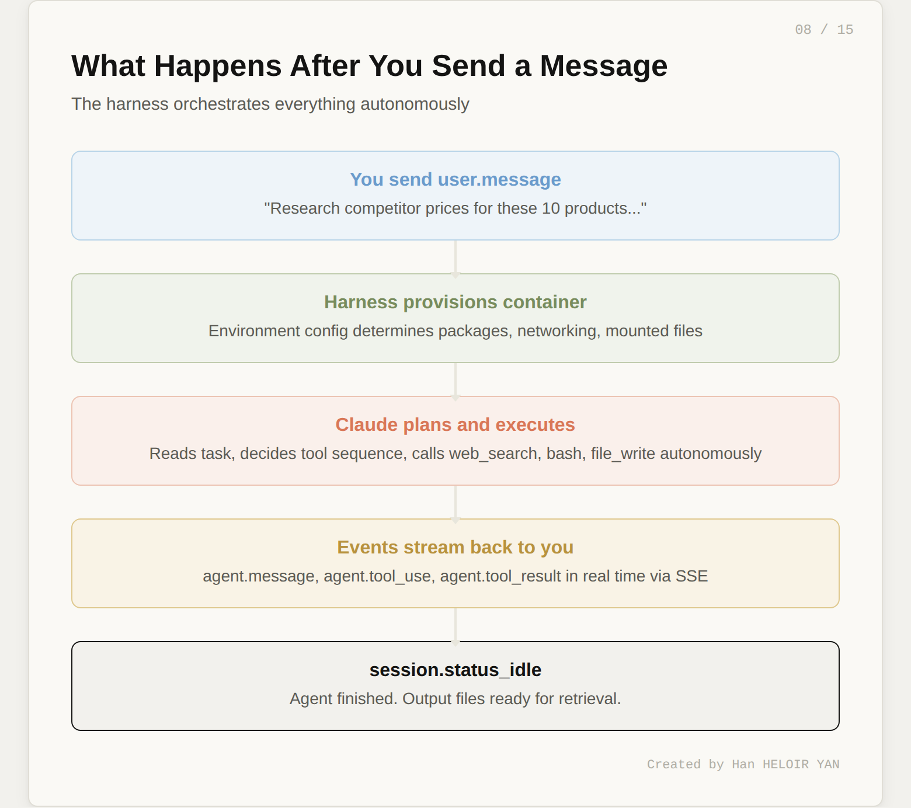
When you send this event, the following sequence fires:
idleThe agent decides the tool sequence autonomously. You don't orchestrate each step. You state the goal and the agent figures out how to get there.
One powerful feature: you can send additional user.message events while the agent is working. This lets you steer mid-execution. If you see the agent going down the wrong path in the event stream, you can course-correct without restarting the session.
The event stream is your window into the agent's brain. Every tool call, every piece of text, every status change arrives as a server-sent event.
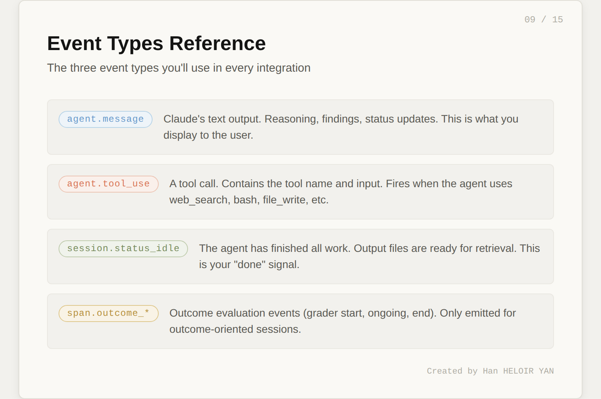
Here's how to consume the stream in Python:
import json
stream = client.beta.managed_agents.sessions.events.stream(
session_id=session.id
)
for event in stream:
if event.type == "agent.message":
for block in event.content:
if block.type == "text":
print(block.text, end="", flush=True)
elif event.type == "agent.tool_use":
print(f"\n🔧 [{event.name}]")
elif event.type == "session.status_idle":
print("\n\nAgent finished.")
breakWhen you run this, you'll see output like:
I'll research competitor prices for each product. Let me start
with the audio category.
🔧 [web_search]
🔧 [web_search]
For AirPods Pro 2, I found:
- Amazon: $249.00
- Best Buy: $249.99
- Walmart: $234.00
Your catalog price of $289.99 is 23.9% above the lowest
competitor price. This exceeds the 15% threshold.
🔧 [web_search]
...
🔧 [bash]
Agent finished.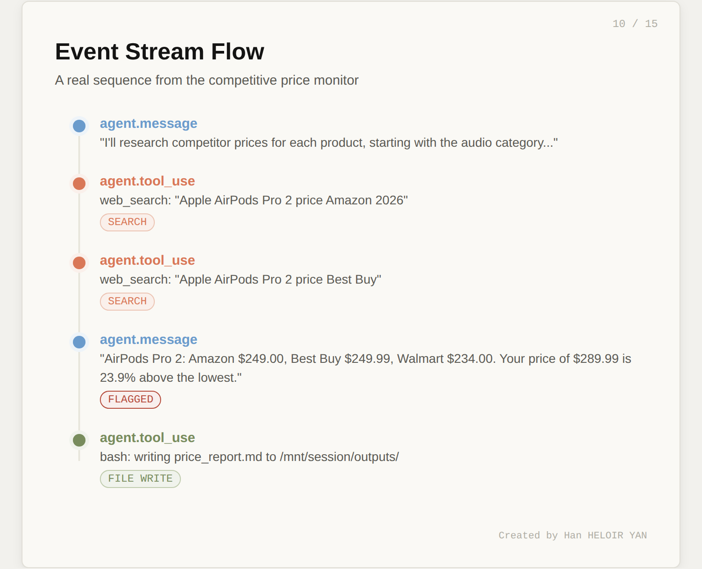
Three event types matter most. agent.message carries Claude's text output (reasoning, findings, status updates). agent.tool_use fires when the agent calls a tool (web search, bash, file write). session.status_idle signals the agent has finished all work.
The full event history is also persisted server-side. You can fetch it after the fact:
events = client.beta.managed_agents.sessions.events.list(
session_id=session.id
)This is useful for debugging, auditing, or replaying what the agent did.
The agent writes its deliverables to /mnt/session/outputs/ inside the container. You retrieve them through the Files API.
files = client.beta.managed_agents.files.list(
scope_id=session.id
)
for f in files.data:
print(f"{f.filename} ({f.size_bytes} bytes)")
content = client.beta.managed_agents.files.content(
file_id=f.id
)
with open(f.filename, "wb") as out:
out.write(content)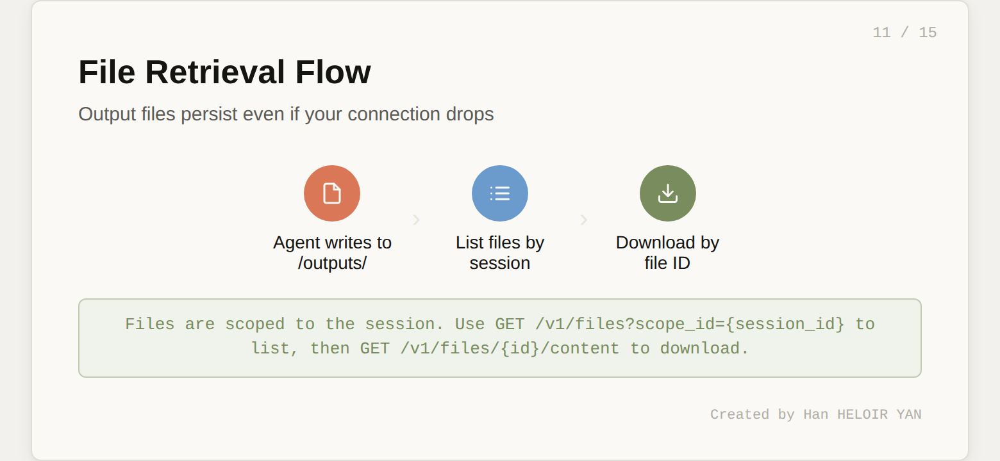
The output file persists even if your connection to the event stream drops. This is a direct benefit of the session-as-durable-log architecture. The agent's work isn't lost when your laptop goes to sleep.
At this point, you have a working competitive price monitor. Five API calls (create agent, create environment, create session, send event, retrieve files) and roughly 30 lines of Python.
But here's the question that separates a demo from a product: how do you know the output is good?
Running the agent once and reading the report manually works for a demo. It doesn't work when you're running this daily across 500 products or deploying it for a client.
The typical answer is to build your own evaluation layer: parse the output, write assertions, maybe use another LLM as a judge. That's weeks of work.
Managed Agents has something better built in. It's called Outcomes, it's in research preview, and it's the most underreported feature of this entire launch.
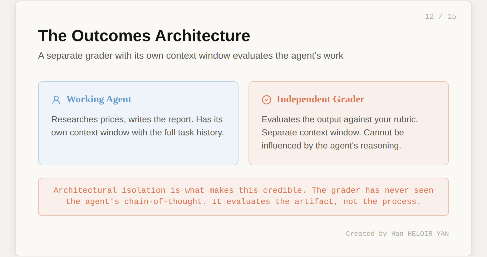
Instead of sending a user.message, you send a user.define_outcome event. It has three parts:
When you define an outcome, the harness provisions a separate grader. This grader runs in its own context window, completely independent from the working agent. It can't be influenced by the agent's reasoning or implementation choices. After the agent finishes a draft, the grader evaluates the output against the rubric and returns one of four results:
satisfied: all criteria met. Session goes idle.needs_revision: specific gaps identified. The agent gets the feedback and tries again.max_iterations_reached: ran out of attempts.failed: the rubric fundamentally doesn't match the task.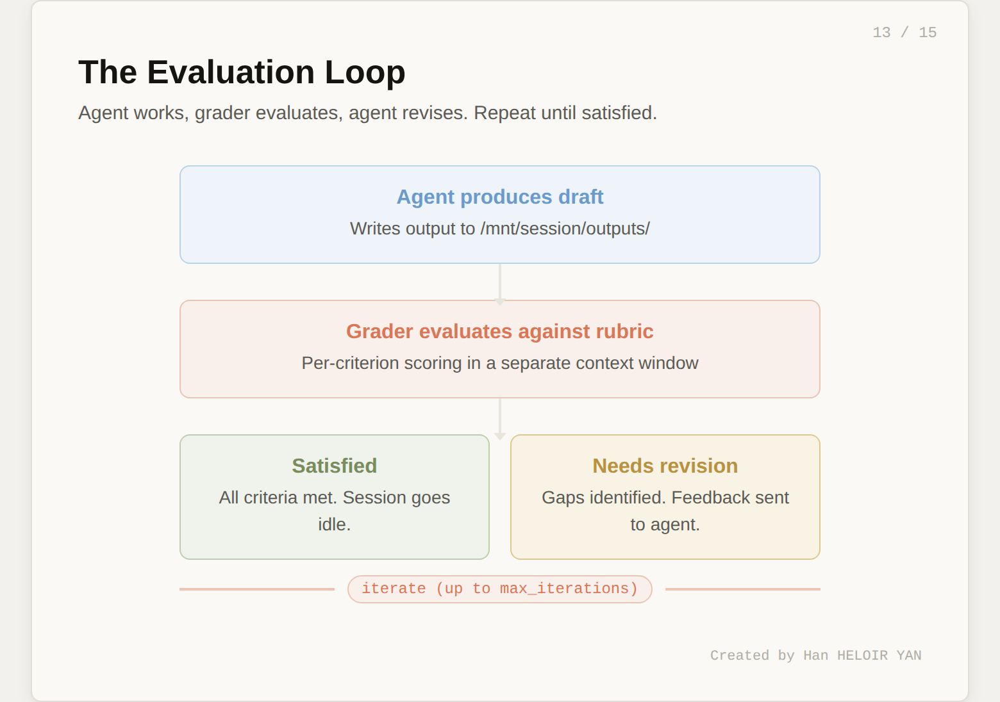
The rubric is the most important artifact in this entire workflow. It transforms "does this look right?" into a structured, repeatable quality gate.
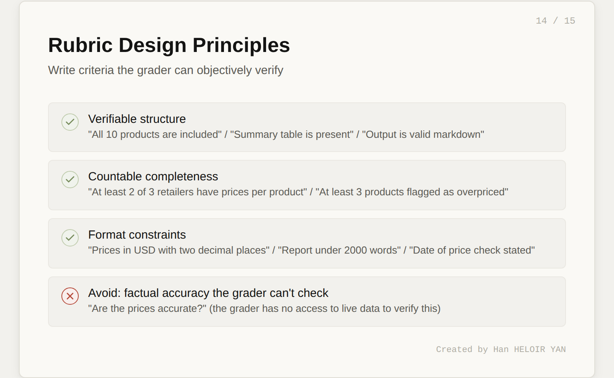
Here's the rubric for our price monitor:
rubric = """
# Competitive Price Report Rubric
## Coverage
- All 10 products from the catalog are included
- At least 2 out of 3 retailers have prices for each product
- Products are grouped by category
## Data Quality
- Each price includes the retailer name and source
- Prices are in USD with two decimal places
- The date of the price check is stated
## Analysis
- A summary table lists all products with your price,
lowest competitor price, and percentage difference
- Products exceeding the 15% threshold are clearly flagged
- At least 3 products should be flagged as overpriced
(given the inflated catalog prices)
## Recommendations
- Each flagged product includes a specific
recommended price adjustment
- The total potential revenue impact is estimated
## Format
- Output is valid markdown
- The summary table is properly formatted
- Report is under 2000 words
"""Each criterion is something the grader can objectively verify. "Data quality" isn't "are the prices accurate?" (the grader can't check that). It's "are prices formatted correctly and attributed to sources?" (the grader can check that). Write rubrics around verifiable structure and completeness, not factual accuracy the grader has no way to confirm.
# Create a new session for the outcome-based run
session = client.beta.managed_agents.sessions.create(
agent=agent.id,
environment_id=environment.id,
title="Price monitor - graded run"
)
# Define the outcome (agent starts working immediately)
client.beta.managed_agents.sessions.events.create(
session_id=session.id,
events=[{
"type": "user.define_outcome",
"description": f"""Analyze this product catalog and produce
a competitive pricing report:\n\n{catalog}""",
"rubric": {"type": "text", "content": rubric},
"max_iterations": 3
}]
)Now stream the events and watch the evaluation cycle:
for event in stream:
if event.type == "span.outcome_evaluation_start":
print(f"\n📋 Grader evaluating (iteration {event.iteration})...")
elif event.type == "span.outcome_evaluation_end":
print(f"Result: {event.result}")
print(f"Explanation: {event.explanation}")
if event.result == "satisfied":
print("✅ All criteria met.")
breakA typical run looks like this:
Iteration 0: The agent produces a first draft. The grader finds that the recommendations section is missing revenue impact estimates. Result: needs_revision.
Iteration 1: The agent reads the grader's feedback, adds revenue impact calculations. The grader finds all criteria met. Result: satisfied.
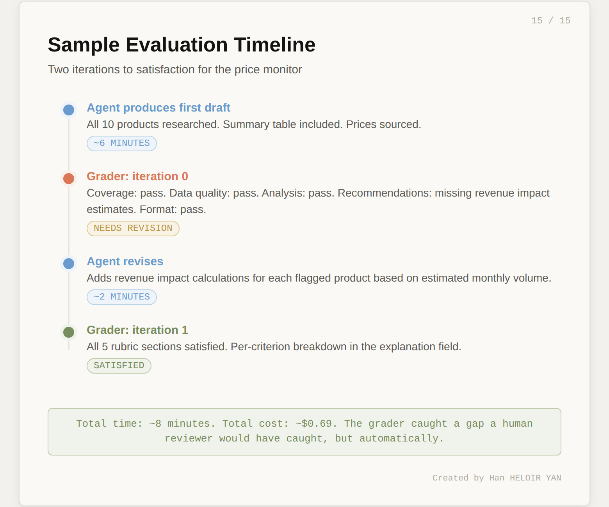
The grader's explanation field gives you a per-criterion breakdown. You can log this, alert on it, or use it to refine your rubric over time.
For automation (CI pipelines, scheduled runs, monitoring), poll the session:
session_status = client.beta.managed_agents.sessions.retrieve(
session_id=session.id
)
for eval in session_status.outcome_evaluations:
print(f"{eval.outcome_id}: {eval.result}")This is the foundation of automated agent testing. Write a rubric. Run the outcome. Check result == "satisfied". That's your assertion.
Let's do the math for our price monitor. A single run with 10 products involves roughly:
Using Claude Sonnet 4.6 pricing:
| Component | Cost |
|---|---|
| Input tokens (50K × $3/M) | $0.15 |
| Output tokens (15K × $15/M) | $0.23 |
| Runtime (0.13 hrs × $0.08/hr) | $0.01 |
| Web search (30 × $0.01) | $0.30 |
| Total per run | ~$0.69 |
With prompt caching (which the harness applies automatically), input token costs drop further. Cache reads are 90% cheaper than fresh input.
For context, running this yourself would require a container orchestration platform, a web scraping service, session state storage, and monitoring. Even a minimal setup on AWS costs $50-100/month in fixed infrastructure before you process a single product.
The honest take: $0.69 per run is cheap for what you get. The cost driver to watch is web search volume. If you scale to 500 products, that's $15 in search costs alone per run.
What you built: A competitive price monitor that takes a product catalog, researches prices across real retailer websites, and produces a structured pricing analysis. Five API calls and ~30 lines of Python.
The key insight: The Outcomes system transforms agent testing from "run it and read the output" into a structured, automated quality gate. The grader is architecturally isolated from the working agent, uses its own context window, and provides per-criterion feedback that drives iterative improvement.
What to try this week: Take your own use case. Write a rubric for it. Run the Outcomes loop. See if the grader catches what you'd catch manually. That's the moment it clicks.
Three features are in research preview (request access separately):